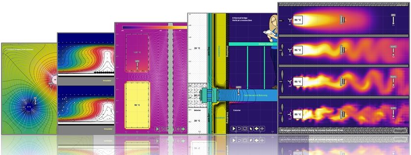

Energy2D 2.0: Creating Your Own Computational Experiments
Energy2D is an interactive multiphysics simulation program that models heat transfer, phase change, chemical reaction, fluid dynamics, electromagnetism, optics, wave mechanics, particle dynamics, multibody dynamics, and their coupling, in two dimensions. Energy2D runs quickly in your Web browser and eliminates the need to switch among preprocessors, solvers, and postprocessors in typical simulation workflows. You can use it to design authentic "computational experiments" to test a scientific hypothesis or solve an engineering problem without resorting to complex mathematics. You may also draft a playful simulation or a learning activity using its generative AI. Finally, you can easily publish and share your work with others.

Sophisticated multiphysics simulations at your fingertips, in your browser
Why multiphysics?
Because nature is never dictated by a single law in physics. To solve a problem in the real world, we must take a holistic, multidisciplinary approach.
How to cite it?
Charles Xie, Interactive Heat Transfer Simulations for Everyone, The Physics Teacher, Volume 50, Issue 4, pp. 237-240, 2012.
How do people use it?
As of December 2025, Energy2D has been used as a simulation tool by scientists and engineers in more than 100 papers.
What are people saying about it?
“I am working as consulting engineer and we often have to make quick estimations where a steady-state node model is too simplified and setting up a complex FEM model is overkill. Energy2D is a very handy tool for something [like] that and I like the click'n'play sandbox feeling in combination with the physical correctness. I never thought FEM could be that fun.”
“A big THANK YOU for this wonderful and free software. I actually try different wall simulations (conduction, energy loss) and i am very happy with your software. I also use Comsol Multiphysics but this software needs much more time for proper solutions than your software. I really appreciate your good work.”
“Energy2D is a wonderful FREE application that carries out complex two-dimensional calculations based on real physics. I have found it difficult to get exact numerical matches between simulations and real world situations, but the physics which the software simulates is deeply insightful. I strongly recommend that you waste several hours playing with its example demonstrations.”
“Very impressed of your software. We are a company located in Costa Rica, in the field of condition monitoring training and reliability. In our main training courses is Infrared Thermography. You software seems very usefull for demonstrations of basic physics concepts of heat and temperature.”
“It is indeed [an] excellent tool for simplified 2D problem. Your tool can find vast marketing opportunity in industrial applications very quickly. In many cases, engineers are only interested in visualizing simple 2D cases like what you present in your tool and they are reluctant to spend thousands of dollars for expensive CFD simulations.”
“All the participants have made very positive comments on the simulation and explored it with great interest, even when their subject matter in school was not science but they teach for example anatomy or business economics! This is again a proof of the very good job you've done, especially for what concern the use of colours and animation.”
“This is the best computer based tool I have found so far! I'm using Matlab and Mathematica a lot, but for the students (and for me too!) this is a simple, intuitive and fast way to check out ideas and learn from intuition and not only from equations. Again, thanks a lot for sharing this, it is amazing! It will help my students and myself a lot.”
“I want to thank you to make this fabulous simulation tool of physical phenomena available to the community. We will use this tool to introduce our students in the course of transport phenomena in understanding the transfer of momentum and energy as heat.”
“My teacher showed me this software. It's really powerful and incredibly simple to use. Sometimes this kind of simulation software is complicated to use. However, this is not an issue with Energy2D.”
“If someone needs a 2D calculation and doesn't want to deal with the details, and is willing to swallow some computational inaccuracy, I highly recommend Energy2D. If everyone already knows, then I'm sorry for the time-wasting, it was new to me, and it's incredibly easy to handle compared to the 3D programs so far.”
🌐 Launch app
🖼️ Simulation gallery
🎓 Tutorial
📜 Script documentation
👣 Sample activity
📚 Published activities
💻 Legacy desktop version
Examples
Thermal conduction
Thermal convection
Thermal radiation
Phase change
Ice melting in water
Chemical reaction
Friction heating
Collision heating
Joule heating
Combustion
Peltier effect
Seebeck effect
Thomson effect
Photovoltaic effect
Ion transport
Advection
Sailboat
Laminar vs. turbulent flow
Rayleigh–Bénard convection
von Kármán vortex street
Magnetohydrodynamic pump
Material thermal bridge
Geometric thermal bridge
Concentrated solar power
Solar updraft tower
Pendulum
Inverted pendulum
Kapitza's pendulum
Newton's Cradle
Slider-crank
Four-bar linkages
Pantograph
Cam follower
Compound Pulley
Geneva Drive
Car suspension
Bridge collapse
Truss bridge
Tuned mass damper
Radial engine
Galton board
Flute
Double-slit experiment
Waveguide
Prism refraction
Under the hood
Multiphysics
Simulation accuracy
Thermal equilibrium
Thermal bridges
Fireplace efficiency
Developers
Charles Xie
This project is supported by the National Science Foundation (NSF) under grant numbers #2105695 and #2131097. Any opinions, findings, and conclusions or recommendations expressed in this material, however, are those of the authors and do not necessarily reflect the views of NSF.